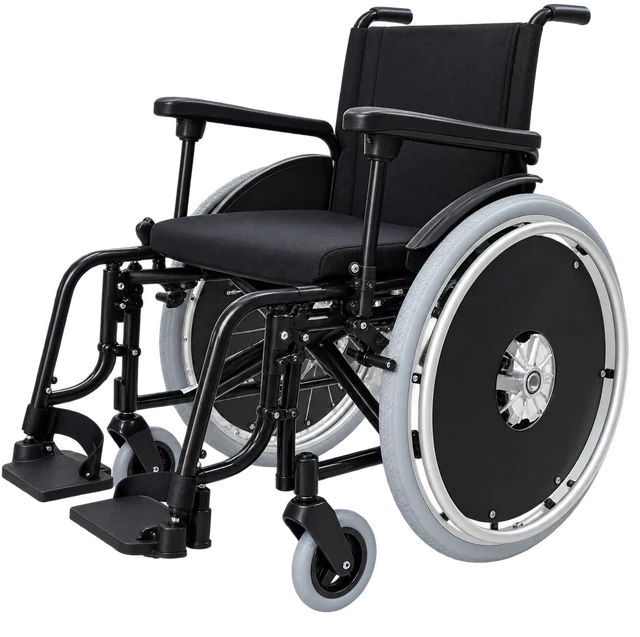
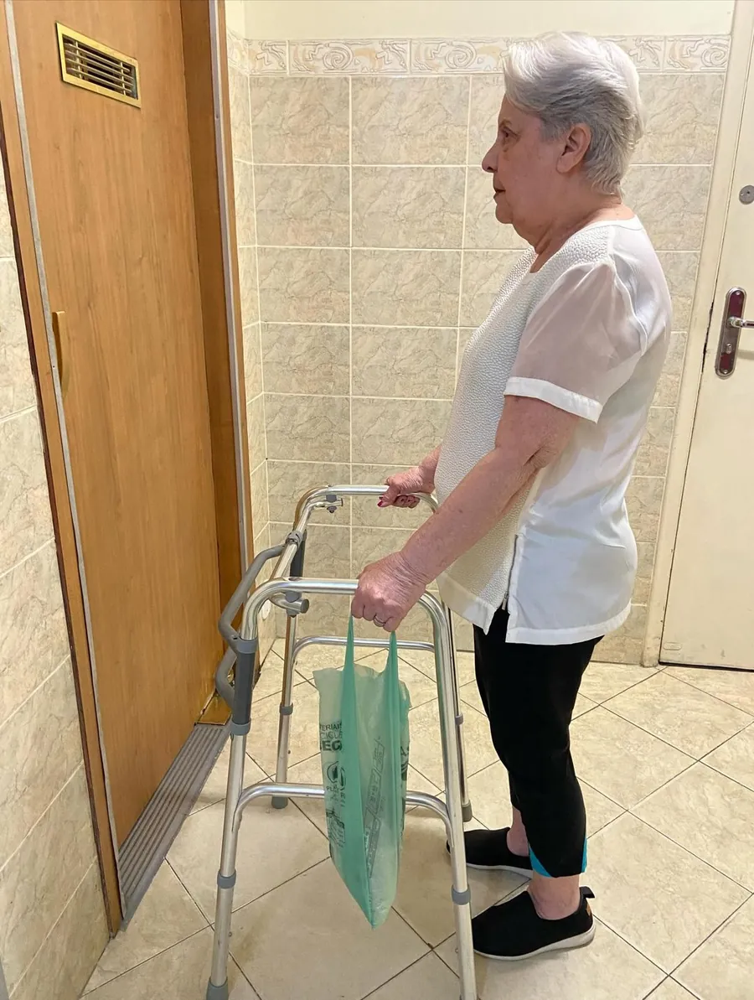
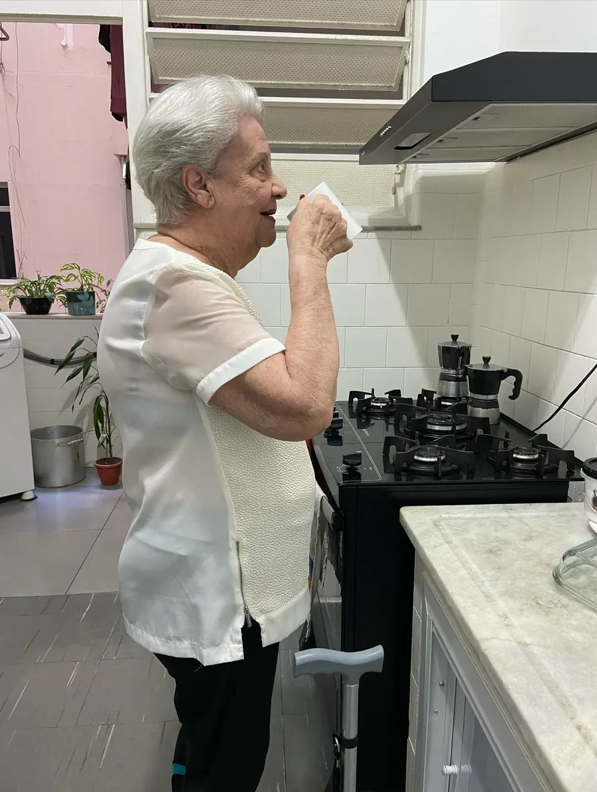

Andréa Rangel · Fisioterapia e mobilidade
Autonomia começa em casa.
Há 25 anos, a fisioterapeuta Andréa Rangel cuida da mobilidade da pessoa idosa. Na Reabilita em Casa, ela une locação de equipamentos e fisioterapia domiciliar para que cada pessoa siga independente, no lugar onde a vida acontece.
Catálogo
Alguns dos 21 equipamentos disponíveis.
Fotos e especificações reais de cada modelo. Toque em um item para ver a ficha completa ou consulte a disponibilidade pelo WhatsApp.
O que fazemos
Do andador certo ao primeiro passo com ele.
Três frentes que se completam: o apoio certo, o tratamento em casa e a orientação para quem usa e para quem cuida.

02 Fisioterapia domiciliarAtendimento individual em casa, com avaliação detalhada e treino dos movimentos que o dia a dia exige.
03 Orientação para a famíliaGuias, vídeos e o Guia prático do andador, para quem usa o equipamento e para quem cuida.
Cadeira de rodas é independência. Andador não é retrocesso.
O equipamento certo, bem regulado e bem usado, devolve à pessoa idosa a liberdade de ir e vir. E à família, a tranquilidade de saber que ela está segura.
Quem está por trás
Uma fisioterapeuta que escolhe com você.
Andréa construiu a carreira dentro das casas dos pacientes. Foi ali, entre corredores, tapetes e degraus, que aprendeu que a reabilitação acontece onde a pessoa vive. Por isso, nenhum equipamento sai daqui sem orientação.
- Pós-graduanda em Gerontologia pela Faculdade do Hospital Sírio-Libanês
- Pós-graduada em Mobilização Neural
- Fundadora de duas empresas voltadas à independência na terceira idade
Não é sobre entregar um produto. É sobre servir e transformar.
Locação de equipamentos
O equipamento certo, pelo tempo que precisar.
Cadeiras de rodas, andadores, muletas, cadeiras de banho e camas hospitalares para alugar no Rio de Janeiro. Antes da entrega, uma fisioterapeuta indica o modelo e as medidas certas para quem vai usar.
Por que alugar
- Manutenção e consertos ficam por conta da locadora.
- Se a pessoa não se adaptar ao modelo, dá para trocar.
- Quando não precisar mais, basta devolver. Nada ocupando espaço em casa.
- Tempo para decidir com calma se vale a pena comprar.
Como funciona a locação
Simples para a família. Seguro para quem vai usar.
Do primeiro contato à devolução, você fala com quem entende de movimento.
Consulta
Conte a rotina, a casa e a necessidade de quem vai usar.
Orientação
A fisioterapeuta indica modelo, medidas e ajustes.
Confirmação
Disponibilidade, período e condições pelo WhatsApp.
Entrega
No mesmo dia, com transporte próprio e demonstração de uso.
Devolução
Quando não precisar mais, retiramos. Sem ocupar espaço.
Quem já passou por aqui
Atendimento que as famílias fazem questão de contar.
Eles se preocupam em explicar tudo e conhecer a história de quem vai usar para melhor indicar.
Precisei de uma cadeira de rodas de urgência, num domingo, e a Andréa prontamente me atendeu. A entrega e a devolução foram rápidas e sem burocracia.
Muito cordial para me explicar a melhor opção para alugar. Atendimento de excelência e rápido demais na entrega.
Aprenda com a Andréa
Pequenos ajustes que evitam quedas.
Orientações curtas, gravadas em casa, para quem usa andador, bengala ou cadeira de rodas, e para quem cuida.
E-book
Guia prático do andador.
Quando adotar, como ajustar a altura, qual modelo escolher e os erros que mais causam quedas. O que Andréa ensina no dia a dia, em um material para consultar sempre.
Quero o meu guiaConte para a Andréa quem você cuida.
Pelo WhatsApp, você fala direto com uma fisioterapeuta e sai da conversa sabendo por onde começar.